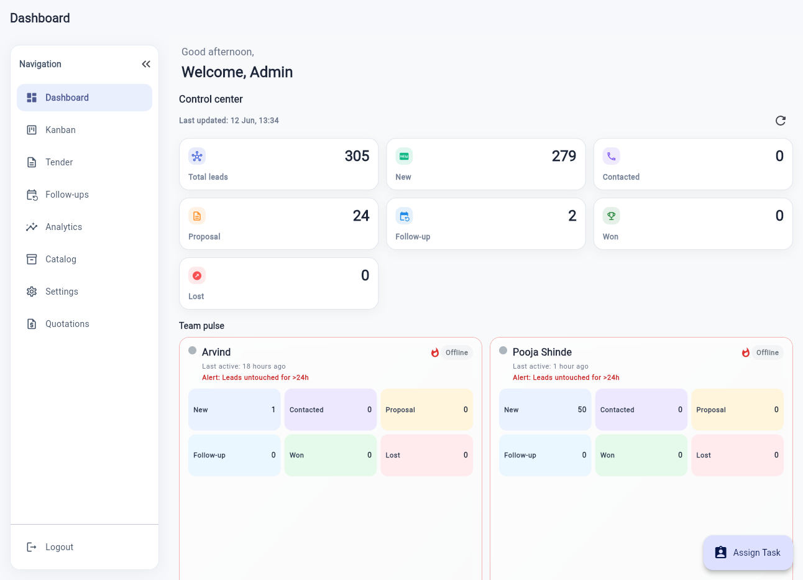
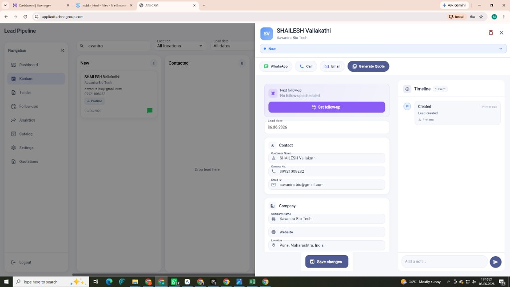
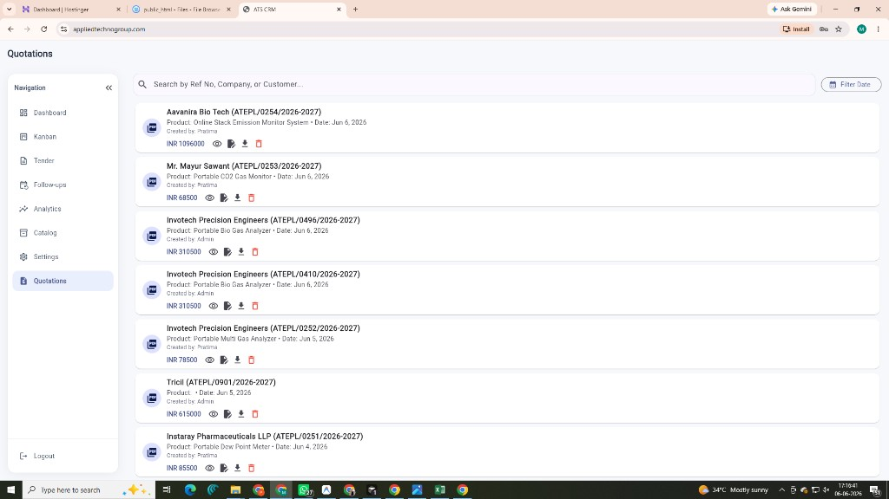
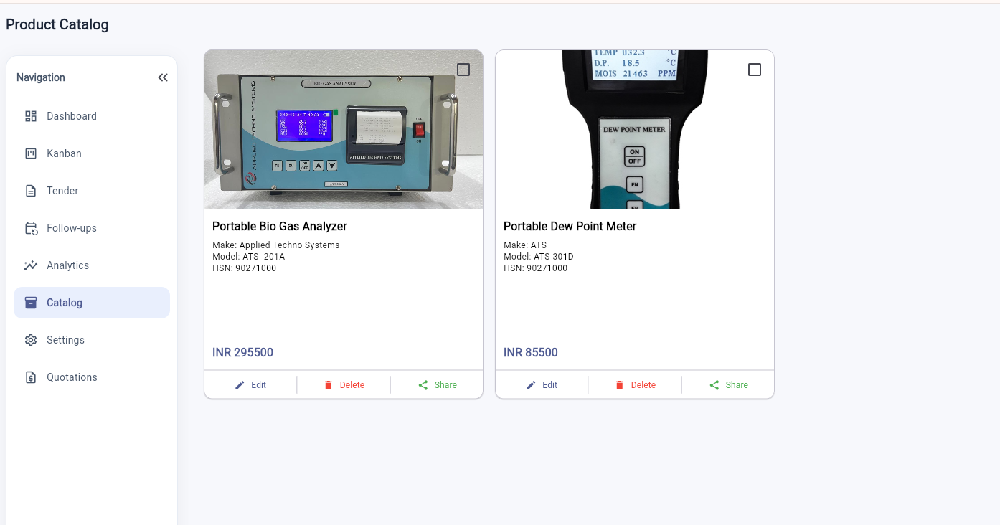
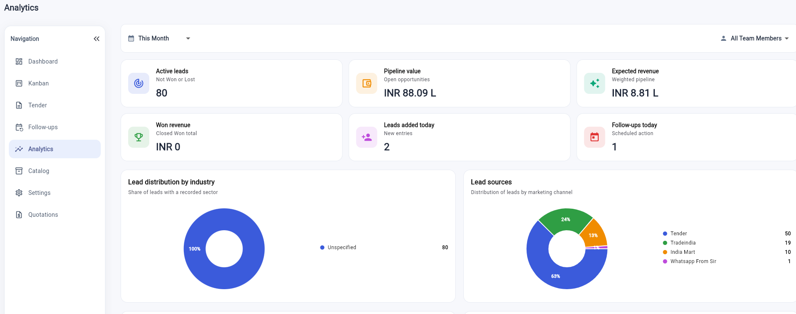

Lead Pipeline
Track every enquiry from new lead to won/lost stage.
Client Proposal Presentation
Lead, Tender, Quotation, Follow-up & Team Management System
A modern web-based CRM designed for teams that need lead tracking, quotation PDF generation, tender management, follow-ups, analytics, tasks and customer communication in one platform.
Build by Mr. Satyam Singh | 7219447133
Solution Overview
Track every enquiry from new lead to won/lost stage.
Manage bid opportunities with tender-specific details.
Create, revise, download and share professional quotation PDFs.
Never miss scheduled calls, visits or follow-up lead notifications.
Build by Mr. Satyam Singh | 7219447133
Dashboard Screen

Build by Mr. Satyam Singh | 7219447133
Lead Pipeline Screen

Build by Mr. Satyam Singh | 7219447133
Lead Workflow
Customer enquiry is entered manually or through Excel upload.
Lead is assigned to the correct team member.
Call, visit or next action is scheduled.
Professional PDF quotation is generated from lead data.
Final outcome is tracked for analytics and reporting.
Build by Mr. Satyam Singh | 7219447133
Tender Management
Build by Mr. Satyam Singh | 7219447133
Follow-up Management
Build by Mr. Satyam Singh | 7219447133
Quotation List Screen

Build by Mr. Satyam Singh | 7219447133
Most Important Module
User opens a lead and clicks Generate Quote.
Product lines, price, additional items and terms are entered.
User can update same reference number or create R1/R2 revision.
System builds branded multi-page PDF with customer and product details.
PDF can be downloaded, previewed or shared through WhatsApp.
Build by Mr. Satyam Singh | 7219447133
Product Catalog

Build by Mr. Satyam Singh | 7219447133
Analytics & Reporting

Build by Mr. Satyam Singh | 7219447133
Bulk Upload & Settings
Upload large lead lists with structured Excel templates.
Bulk tender records can be imported with tender-specific fields.
System checks rows and shows failed records clearly.
Admin can maintain dropdown values like website, IndiaMART or referrals.
Reusable message template with customer variables.
Create team access and manage permissions from settings.
Build by Mr. Satyam Singh | 7219447133
Task & Team Management
Complete business control and visibility.
Focused workspace for assigned work.
Build by Mr. Satyam Singh | 7219447133
Technology
Build by Mr. Satyam Singh | 7219447133
Commercial Proposal
Complete CRM setup with lead, tender, quotation, follow-up, catalog, analytics and admin modules.
Support can be decided based on change frequency, hosting help, bug fixes and new requirements.
Small feature additions, extra reports, template changes, PDF improvements or workflow updates.
Build by Mr. Satyam Singh | 7219447133
Business Benefits
Professional quotations with fast PDF creation and download.
Better follow-up discipline through follow-up lead reminder notifications and calendar visibility.
Centralized data for leads, tenders, products, quotations and tasks.
Team accountability through role-based access and task assignment.
Management clarity through pipeline and revenue analytics.
Build by Mr. Satyam Singh | 7219447133
Thank You
The system can be customized according to client workflow, number of users, quotation format, reporting needs and future business requirements.
Build by Mr. Satyam Singh | 7219447133
Click outside image or press Escape to close